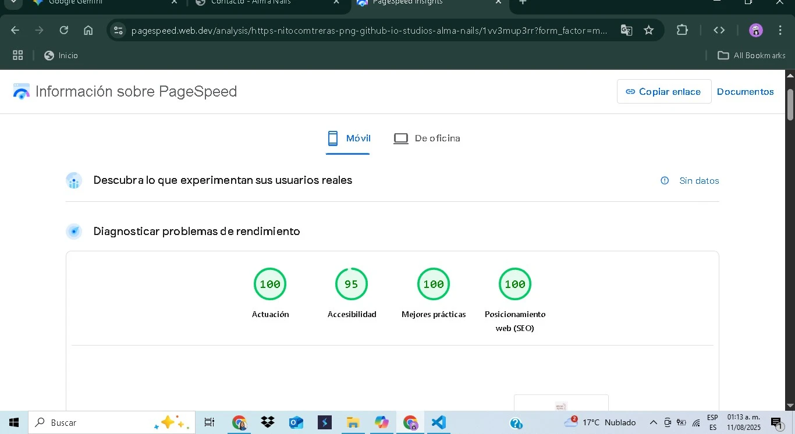

Casos de Éxito
Aquí puedes ver cómo la aplicación de una metodología estratégica y una ejecución técnica precisa se traducen en resultados reales y medibles.

Cliente Real
Alma Nails Studio
Migración y reconstrucción de un sitio web para un negocio local, con un enfoque extremo en el rendimiento, la accesibilidad y el SEO técnico para dominar las búsquedas locales.
Ver Detalles del Caso
Proyecto Conceptual
Café Origen Celestial
Diseño de un plano arquitectónico digital para un e-commerce de especialidad, enfocado en la escalabilidad, la optimización de la conversión y la implementación de un modelo de suscripciones.
Ver Plano Estratégico